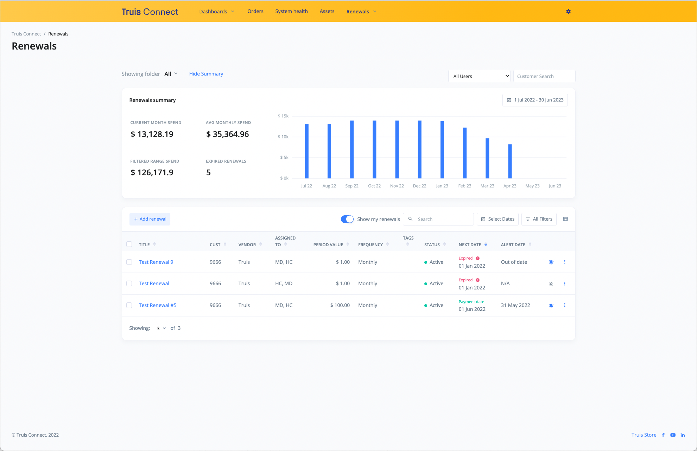

Truis Connect is a customer portal used by customers and staff of Truis to track and manage their orders, assets, renewals and health of their systems. After the Orders page redesign was completed, the update was for the Renewals page as management wanted to utilise it to increase the number of leads. The current Renewals database had many inaccuracies which created a loss of trust from staff and customers alike. The target audience are IT Managers of small to medium sized businesses who are typically the first point of contact for our business and any deals made. My role in the project is a UX/UI Designer as well as a Front-end Developer. The challenge with this project was our lack of human resources, therefore I had to take on two roles during the project lifecycle.
For this project I pushed for having a bigger focus on the design stage of the project by creating a concise project plan, outlining the process of the design, the goal for each stage and what had to be done.
To view the process plan and design doc in full on Figma:
Click here
I first planned a few interviews with the internal staff and customers that frequently use the existing Renewals page. Unfortunately, customers were too busy or not comfortable with being interviewed, so instead I interviewed our IT Manager as a stand-in as they perform the same role internally as our target audience. Although this may have created some bias and a smaller sample size, it was a better alternative than no data collected.
Some of the key points from the interviews
Using the existing user persona created from the marketing team, I included goals and frustrations of the target audience that were discovered from previous customer interviews from our own IT Manager.
User persona expanded on from the Marketing research
I took goals from the persona and explored how the user would go about achieving their goals using the existing renewals page. This outlined many common drawbacks and highlighted points of focus that needed improvement. From this, I then could define the key problems with the existing Renewals: Lack of user agency, data inconsistency and lack of meaningful organisation.
One of the user journey maps created
Next, I explored how other websites and apps went about managing their renewals. With these new perspectives I had a wider range of apps and websites that I could draw inspiration from. I used these platforms and took notes on what made them efficient or not user friendly and why, with the intention to be more informed in my own designs.
Exploration of ideas from similar platforms
I brought the Development team together to a white board and we worked together to come up with ideas for a redesign of the Renewals page. We used ideas from the contextual reviews and the interviews to highlight opportunities to improve our own platform.
Collection of ideas that were brainstormed and categorised into 3 points
With the key features we outlined in the brainstorming I explored the steps a user could take to complete all of the possible tasks and their goals. I made multiple iterations of each process and then discussed with the team to determine the best flow.
User flow diagrams of one of the tasks identified
I iterated on wireframes using Figma that incorporated all the task flows, colouring it based on hierarchy of information. Later as I developed the wire frames, I also began to look at the visual hierarchy to ensure the user understands the difference between sections and to focus on the important elements of each section.
To save on time we acquired a bootstrap theme which combined multiple JavaScript plugins that allowed for easy building of a basic and interactive page based on the wireframes. When the design was iterated on further, it would be explored as a wireframe, reviewed and then put together in HTML.
Internal user testing was done frequently to discover bugs and design flaws to iterate on the design and improve the overall user experience.
As of writing this the Renewals redesign is still in-progress therefore the success of the redesign cannot be reviewed. One of the main issues with the original Renewals page was the data inaccuracy. This is an issue that comes from the automated process that creates renewals from deal records. To solve this we an designed and developed an admin page for a chosen staff member to valid the data before creating each renewal. Having spent more time on the design process I am more confident that it improves the user experience. If I could start this project again, I would have focused more on creating design docs that gave diagrams and flows visually for myself to follow more closely during development and to not lose sight of the core ideas.